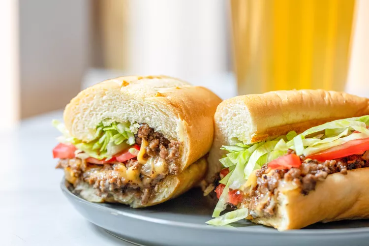

Chopped Cheese PREP TIME 10 mins COOK TIME 20 mins TOTAL TIME 30 mins
SERVINGS 6 servings
Ingredients:
2 pounds (80/20 blend)ground beef
1 white onion, chopped
4 clove garlic, chopped
1 teaspoon kosher salt
1/2 teaspoon black pepper
1 tablespoon Worcestershire sauce
6 hoagie or bolillo rolls
12 slices American cheese
6 tablespoons mayonnaise
Shredded iceberg lettuce, for serving
Tomato slices, for serving
Instructions:

Cook the ground beef
Add your ground beef to a large, dry pot or skillet over medium-low
heat. Slowly cook so the fat renders out. Stir regularly, breaking
up the beef as it cooks, until it is in crumbles but not fully
cooked (some of the meat will still be pink)
Add the onions, garlic, and seasoning: Once the beef is browned and
most of the fat has rendered out (about 7-8 minutes of cooking)
turn the heat up to medium and add onions and garlic.
Cook for another 4-5 minutes until vegetables soften.
Season the filling with salt, pepper, and Worcestershire sauce
Remove from heat
Diced Onions and Garlic Added to Pot of Cooked Ground Beef for NYC
Chopped Cheese Recipe Cooked Ground Beef Filling for NYC Chopped Cheese
Toast the buns:
Slice your rolls in half and toast them in batches over a griddle or in
a large skillet over medium heat until browned.
Combine the cheese and ground beef:
For each sandwich, portion out about 1/6 of the beef filling at a time
and add to the griddle or skillet over medium-low heat. Let the filling
get hot and then cover it with two slices of American cheese. Let it sit
long enough got the cheese to melt. If you like, roughly “chop” the
cheese into the beef mixture with the side of a metal spatula.
Beef Filling Topped with Slices of Cheese on a Griddle for Chopped
Cheese Sandwich. Place the roll on the ground beef: Add 1 tablespoon of
mayo to one side of your toasted roll and cover the beef filling with a
toasted roll, by placing the roll, toasted side down, on top of the
chopped beef mixture. Sliced Hoagie Roll Placed on Top of Chopped Cheese
Filling on Griddle
Finish the sandwich and serve:
After 30 seconds, use a spatula to flip the roll, keeping the filling
inside. If any filling falls out, use the spatula to add it back to the
roll. Repeat as needed to make other sandwiches. Add shredded lettuce
and sliced tomato to the sandwich. Cut in half and serve immediately.
Leftover chopped cheese filling can be stored in the fridge in an
airtight container for 3-4 days. You can add the filling straight from
the fridge to a griddle to make a sandwich. Only make as many sandwiches
as you need to, but if you have leftover filling, that’s great!
 After 30 seconds, use a spatula to flip the roll, keeping the filling
inside. If any filling falls out, use the spatula to add it back to the
roll. Repeat as needed to make other sandwiches. Add shredded lettuce
and sliced tomato to the sandwich. Cut in half and serve immediately.
After 30 seconds, use a spatula to flip the roll, keeping the filling
inside. If any filling falls out, use the spatula to add it back to the
roll. Repeat as needed to make other sandwiches. Add shredded lettuce
and sliced tomato to the sandwich. Cut in half and serve immediately.